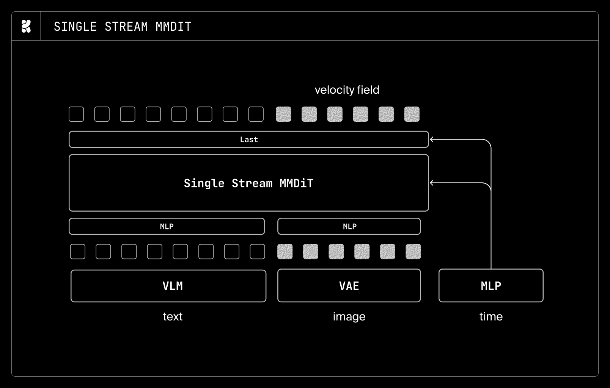
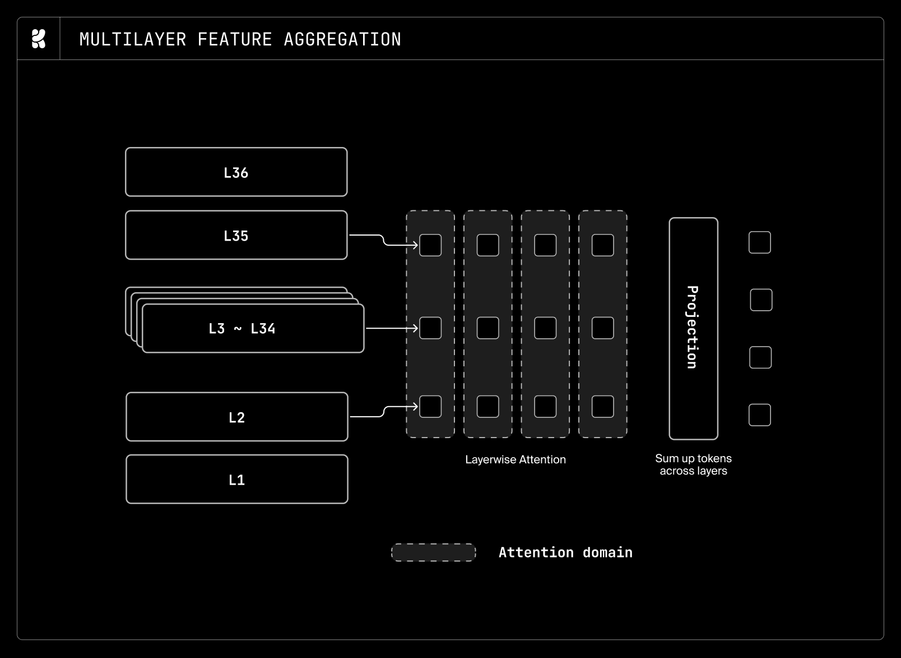
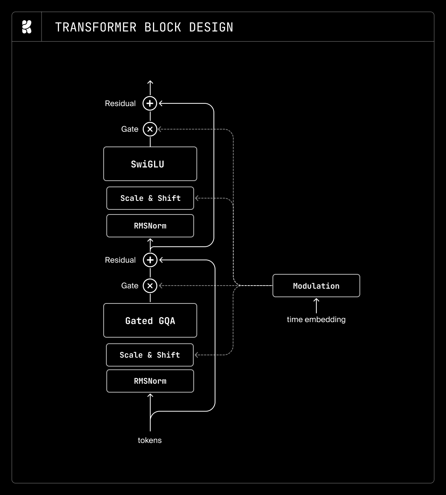
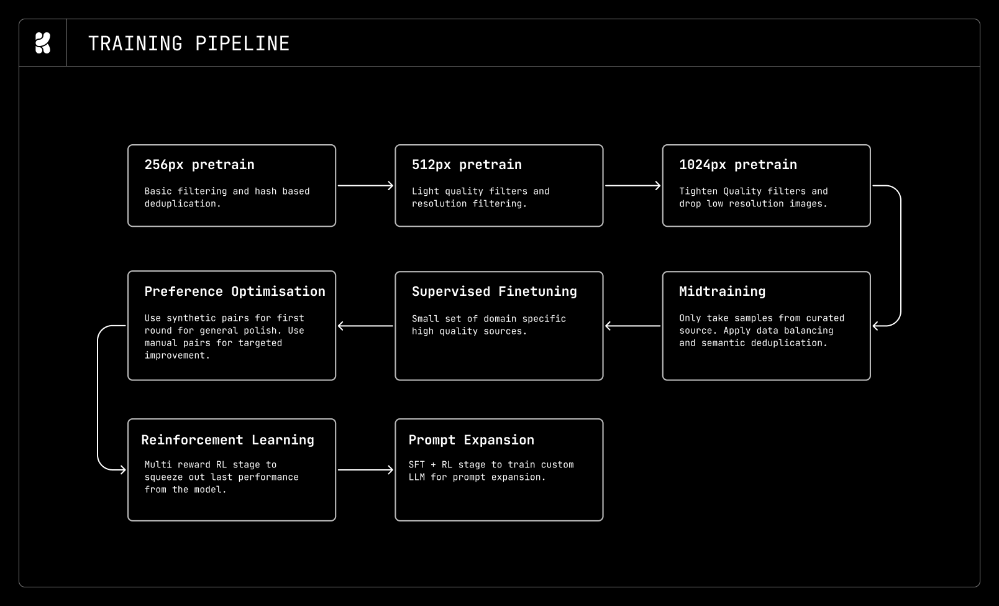
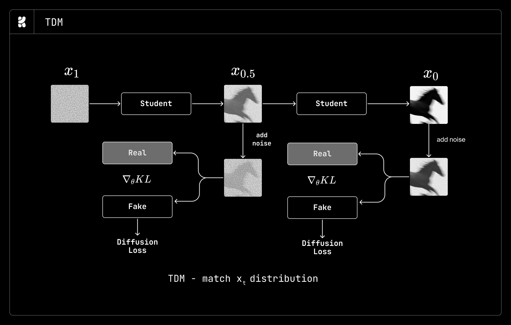
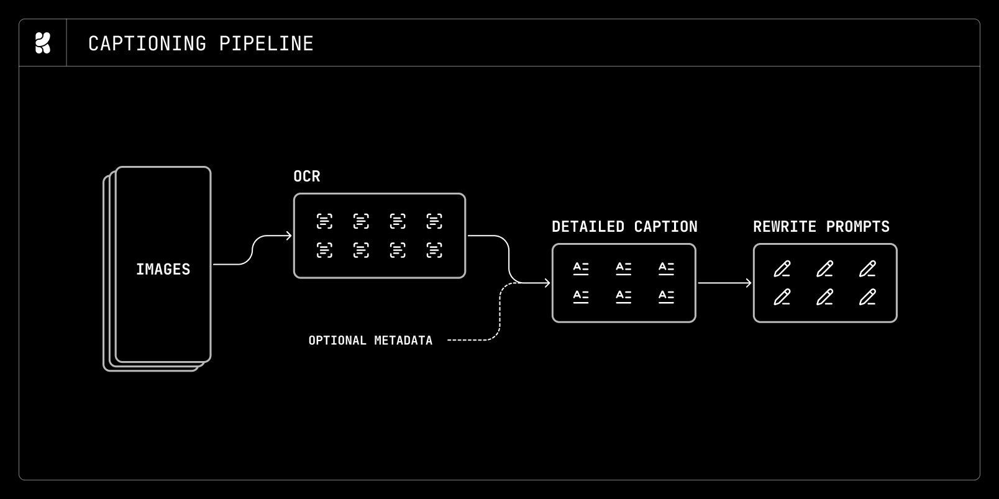

Krea 2 Technical Report：一个为「创意探索」设计的开源文生图基础模型

⚠️ 这是一份技术报告（博客形式），不是带公开训练代码的方法论文。 它几乎不含新公式，重点是全栈工程决策与消融结论。本文遵循论文精读的 5 段骨架，但把「代码交叉引用」替换为报告自身给出的代码片段（SQL 任务队列、
pluckmap API），并对报告用散文描述、背后是标准公式的方法补全数学形式（明确标注「这是标准形式，非 Krea 独创」）。Krea 2 已开源权重 + 推理代码（permissive license），但报告描述的训练配方/数据基建并不在推理代码里。
1. 出发点 (Motivation)
过去几年文生图突飞猛进：扩散 / flow-matching 模型能出高分辨率、锐利的写实图，稳定的结构，密集文字，丰富世界知识，精确跟随 prompt。但报告点出一个副作用——整个领域为了「在这些能力上更可靠」，纷纷收敛到一小撮默认美学。作为生产工具这很有效，但作为创意探索引擎就差了：用户常常想在风格、情绪、构图、视觉方向之间搜索，而不是收到一张打磨过的默认答案[§Introduction]。
Krea 2 的信念因此是：图像生成应该是一种探索性媒介——表达力要足够宽（覆盖多种美学），可控性要足够强（创作者能在其中导航）。为此它做了两件事：
- 把基础模型本身训得「分布更宽」：从数据策展到训练全程,刻意保留多样性、不过度向「高质量默认」收敛。
- 补两套可控性接口，弥合「模型学到的稠密 caption 条件空间」和「用户真实输入（短、模糊、各种习惯）」之间的鸿沟：一个 prompt 扩写器（把欠定的用户 prompt 映射成模型友好的稠密 caption，但不覆盖用户意图），一个风格参考系统（用一张/多张参考图注入风格，且内容泄漏最小、风格强度可调）。
一句话动机：别人优化「单一稳态默认图」，Krea 2 优化「一个宽广可导航的视觉空间」，并把它开源出来当社区基线。代价是要在数据/训练里主动对抗「向易学的高分布收敛」的引力。
2. 方法 (Method)：从 LLM 生态搬来的极简 DiT + 五阶段训练
2.1 直觉：架构决策的四个评判维度
Krea 2 做架构消融时，先把每个改动的目标归到四类之一[§Architecture]：稳定性（loss/梯度尖刺更少？）、性能（收敛更快？且在更长训练 + 更高分辨率下趋势保持？）、效率（参数/FLOPs/显存/通信更省而不掉质量？）、简洁性（能更简单而不伤其它三项？）。
一条贯穿全文的方法论：优先采用 LLM 生态里已成熟的架构组件——这样能直接复用现成 kernel 和优化，即便是给扩散模型用。

2.2 最小 demo：一张消融表读懂最终架构
报告给了一张「基线 → 消融候选 → 最终选择」的总表，浓缩了所有架构决策：
| 组件 | 基线 | 消融候选 | 最终选择 |
|---|---|---|---|
| 注意力 | 多头注意力 MHA | GQA / MLA / 门控 sigmoid | GQA + 门控 sigmoid 注意力 |
| MLP | GeLU MLP | SwiGLU | SwiGLU（4× 扩张） |
| 残差 | 标准残差 | Value residual / Laurel | 标准残差 |
| 文本编码器 | T5-XXL | T5Gemma / Qwen2.5-VL / Qwen3-VL / umT5 | Qwen3-VL |
| 时间步调制 | 每块 MLP 调制 | 轻量带 bias 调制 | 轻量 bias 调制 |
| 自编码器 | FLUX AE | Qwen-Image VAE / DC-AE / FLUX2 AE / 内部 VAE | Qwen-Image VAE & FLUX2 VAE |
| 块设计 | 单流块 | 混合流 / 并行单流 | 单流块 |
| 归一化 | LayerNorm / QKNorm | RMSNorm / 零中心 RMSNorm / Derf | 零中心 RMSNorm + QKNorm |
| 位置编码 | 3D 轴向 RoPE | Golden-Gate / MRoPE / 归一化 / 部分 RoPE | 3D 轴向 RoPE |
几个有意思的取舍（都对应「LLM 已验证」原则）：
- GQA + 门控 sigmoid 注意力：GQA 几乎不掉质量却省算力；门控 sigmoid（来自《Gated Attention for LLMs》）几乎零开销，性能没大涨但训练动态更稳（loss / 梯度范数曲线更平）。
- MLA 其实更好但没用：MLA 比 GQA 略强，但带来额外计算开销；注意扩散是纯 prefill、推理无 KV cache，所以 MLA 用了上下投影压缩 KV、且不用 decoupled RoPE。
- 单流块为了简洁：单流 / 双流 / 混合流性能差不多，混合流（前 1/3 双流 + 后 2/3 单流）略好，但最终为简洁选单流。
2.3 正式化：rectified-flow 速度损失 + 几个关键改造
最终模型用标准 **rectified-flow（v 参数化）**损失训练。给干净 latent \(x_1\)、噪声 \(x_0\sim\mathcal N(0,I)\)，线性插值路径 \(x_t=(1-t)x_0+t x_1\)，目标速度是 \(v=x_1-x_0\)，网络 \(v_\theta\) 学着预测它：
—— 翻译: 这是 flow-matching 的标准训练目标（非 Krea 独创）；网络在每个噪声水平 t 上预测「从噪声指向干净图的方向」。c 是文本条件。
在此之上有三处加速/改造值得记：
(a) 轻量时间步调制（省 20–30% 参数）。 多数 MMDiT 用「每块一个 MLP」生成 AdaLN 的 scale/shift/gate——这些 MLP 能占总参数的 20–30%，Krea 认为「为了注入一个标量条件太奢侈」，于是把每块 MLP 换成每块一个可调 bias，省下的参数全给注意力和 MLP[§Timestep conditioning]。他们也试过「完全去掉时间步条件」和「in-context 时间步 token」，前者一直更差；后者在 256px 上 4–16 个时间步 token 就能替代 AdaLN，但到 512/1024px 就明显不行。
(b) iREPA 加速收敛（用一个 epoch 就撤）。 256px 阶段的第一个 epoch用 iREPA（表示对齐，REPA 家族）加速早期收敛，然后立刻移除——「让 MMDiT 学自己的表示，同时大幅加快初始收敛」[§Pretraining]。这与 sefi-image-2026 全程依赖 REPA/语义引导的路线形成对照：Krea 把它当「点火助推」用完即弃。
(c) 多层特征聚合（MFA）的文本编码器。 Qwen3-VL 是自回归 VLM，它的最后一层特征是为 next-token 预测优化的、并不适合图像生成。受 Unifusion 启发，Krea 不取最后一层，而是加一个浅层注意力跨层聚合隐藏特征，让模型动态选择「粗→细」的文本表示；再叠一层轻量双向 Transformer（沿 token 轴）来削弱自回归偏置。


VAE 选择的一处实证教训：DC-AE 提供高达 32× 空间压缩、对训练/推理效率诱人，但它的重建误差给扩散模型「解析精细细节的能力」设了硬上限；相比之下 Qwen-Image VAE 和 FLUX2 VAE 收敛快得多且重建质量好——所以早期用 Qwen-Image VAE、后来大模型转 FLUX2 VAE[§Autoencoder]。
2.4 五阶段训练流水线

- 预训练：256→512→1024px 课程学习，把大头 FLOPs 花在低分辨率建核心能力。256/512px 用 8-bit 训练（256 张量级 scaling、512 行级 scaling），提速 15–20% 而几乎不掉点；1024px 起回 bf16。用随分辨率增大的 logit-normal timeshift（只 sweep 训练 timeshift，推理 timeshift 固定）。LR 用 warmup-stable-decay，用 PMA（预训练模型合并）替代 EMA——效果相当但省掉 EMA 的大显存开销。
- Midtraining：从 LLM 借来的阶段，自上而下地先选好域和源（与预训练自下而上相反），平滑衔接「通用预训练分布」到「高质量 SFT 分布」。用 FAISS 层次 k-means + PageRank 实体覆盖（见 §4.2）。
- SFT：小而精的高美学图集，把模型进一步偏置向理想美学方向，专治早期 checkpoint 的高饱和/纹理问题；多个域专用 SFT checkpoint 再模型合并成通才。
- 偏好优化（PO）：两阶段——先大规模合成偏好对（类 delta-learning，保证多数对里至少一个 on-policy 样本）粗调，再用纯人工标注校准（标注者是熟悉模型脾性的自己人）。
- RL：见 §2.5。
- 时间步蒸馏（可选）：见 §2.6。
2.5 RL：多奖励 GRPO + 无 CFG + 把 prompt 选择当资源分配
RL 是最后一阶段，用 多奖励 GRPO 风格方法，四个奖励模型：①通用美学（在 PO 阶段人工偏好数据上微调的开源 VLM）②prompt 跟随 ③文字渲染 ④伪影与结构。形式上 GRPO 对每个 prompt 采一组 \(G\) 个样本、用组内归一化优势：
—— 翻译: 同一 prompt 生成一组图，每张的总奖励是四个奖励模型的加权和；优势 = 该图奖励相对组内均值/方差的标准化。组内对比省掉了单独的 critic。（GRPO 是标准形式。）
三个工程要点：
- rubric 奖励抗主观性：prompt 跟随/文字渲染比「美学」更可验证。借鉴 LLM 的 rubric 评测，把每个 prompt 拆成可核验的需求清单逐条打分，而不是让裁判模型给一个笼统分。
- 专门的伪影奖励抗 reward hacking：只优化美学+跟随会让模型生成「乍看合理但有多指/畸形肢体/扭曲文字」的图——这些人一眼能看出、通用 VLM 裁判常漏。于是单训一个伪影奖励模型专抓结构错误。
- prompt 选择 = 资源分配：持续分析每组的奖励统计，太易/太难/组内方差太小的 prompt 信号少，降权或剔除，把算力花在「模型还能学」的样本上。
- RL 全程不开 CFG：保持 rollout 与训练分布一致、省开销；这会快速把「无 CFG 的条件分布」拉近到「有引导的分布」。推理时 CFG 仍可作为额外控制旋钮。
报告还提到 PO 阶段的一个坑——策略发散：DPO 想拉大「赢样本 vs 输样本」的 likelihood 间隔，但实践中模型常靠**同时降低两者的概率（只是降速不同）**来达成，从而漂离预训练分布、后期冒出高频伪影。Krea 设计了一个 DPO 变体 STPO（加辅助损失 + 改动原 DPO 形式）来抑制发散。其抑制的本质，是给 DPO 目标加约束、别让两个分支一起塌：
—— 翻译: 标准扩散 DPO：让「赢样本相对参考模型的对数似然比」高于「输样本」。STPO 在此基础上加项，阻止 p_θ(x⁺) 和 p_θ(x⁻) 一起被压低导致的分布漂移。（DPO 为标准形式，STPO 细节报告未公开。）
2.6 时间步蒸馏：为什么选 TDM 而不是 DMD/DMD2
RL 后有个可选的「制导蒸馏 + 时间步蒸馏」阶段，把多步教师蒸成少步学生。候选有 DMD、DMD2、Decoupled DMD、piFlow、APT，最终选 TDM（Trajectory Distribution Matching）[§Timestep distillation]，理由是简单、少超参、data-free、且支持灵活多步（排除了 GAN 类方法和需要改成多时间步预测模型的 piFlow）。

2.7 两套可控性系统
- Prompt 扩写器：在开源 LLM 上做 SFT（用另一个 LLM 从长 caption 反向合成「欠定用户 prompt」造成对，并合成 thinking trace 保留推理）+ RL（GDPO 多奖励：图像级质量/偏好 + prompt 级可验证「是否忠于原意」 + 安全门控）。特别地，用 DINOv3 embedding 多样性分对抗「多样性坍缩」（扩写器容易学成单一安全的高奖励 house style）——且发现多样性奖励必须全程保持，一旦退火权重过小就迅速坍缩。
- 风格参考系统：在基模上构建，支持多风格语义混合、连续风格强度控制、复杂风格 SOTA 还原。难点是「风格 vs 内容」歧义导致的内容泄漏，且高保真风格迁移数据难大量获取。Krea 用一个自监督训练技巧 + PO 对齐来解（具体方法报告未展开）。
3. 结论 (Key findings)
- 榜单定位：Krea 2 进入 Artificial Analysis 文生图榜前 10，在独立实验室（非大厂）模型中排第 2[§Introduction]。作为开源基线，它在保持竞争力的同时主打创意生成体验。
- 8-bit 训练实测有效：256/512px 阶段相对 bf16 提速 15–20%，训练 loss 和评测指标几乎不掉。
- 架构「做减法」可行：用 LLM 生态的成熟组件（GQA、SwiGLU、RMSNorm、轻量 bias 调制）能在不掉质量下显著省参数（仅时间步调制一项就省 20–30% 参数）并提升稳定性。
- 数据策展的反直觉结论：①不用 AI 生成图——哪怕一小撮也会因「合成图更易学」给模型质量设上限、引入偏置；②多样性 > 纯高质量——只过滤「重复/VLM 反复抓不准/诱发偏置伪影/低分辨率下太复杂/AI 生成」这几类，其余即便「不理想」也保留（因为模型精确理解了不良行为，后续可用来反向 steer）。
- 基建结论：①InfiniBand 网络不稳是崩溃的头号原因（链路抖动、丢包、拥塞、符号错误）；②GPU 数翻倍带来的不稳定远超预期——<128 GPU 的 run 能跑几天，但超大规模下「没有一个 run 能连跑 24h 不崩」，且很多崩溃无明显原因（静默 NCCL 超时而所有指标看着正常）；③换 Ceph→Weka 后文件系统故障骤降、30 秒完成一次 checkpoint。
4. 实现细节 (Implementation notes)
这是这份报告信息密度最高的部分。下面把散落的工程细节按子系统归拢，并引用报告自身给出的代码。
4.1 数据策展与 caption（不靠 IQA 分数过滤）
报告明确反对用美学分/IQA 模型做主过滤——「模糊」可能是故意的艺术选择，会引入隐性偏置[§Data Curation Principles]。低分辨率阶段（数十亿图）靠廉价 CPU 过滤（坏文件/分辨率/宽高比/Laplacian 去极端纹理噪声）；去重用 md5 + phash + colorhash 组合（发现默认 8×8 phash 不看颜色、误报高，改用 12×12 phash + colorhash）。任何需要 GPU 的低分辨率过滤模型都控制在 <1B 参数。
一个巧思：在 SigLIP-2 embedding 上训一个稀疏自编码器（SAE），再用 VLM 给每个 SAE 特征按 top-k 激活样本打标签，形成无监督标签系统来过滤视觉伪影——无需为每种伪影单独训分类器。
Caption 是多阶段的：OCR 抽可见文字 → VLM 结合 OCR + 元数据（相机参数、已知实体）产出富含世界知识的长 caption → 更便宜的 LLM 改写成多种长度/格式。实证：长 prompt 提供稠密监督、收敛更快 loss 更低，但仍保证短/中 prompt 的曝光（下游很多场景需要）。

4.2 Midtraining 的实体覆盖：PageRank + Wikidata 兜底长尾
一个被严肃对待的问题：用户会直接点名某个实体（运动员、演员），但这类实体可能落在「拥挤的语义簇」里、被层次采样误删。Krea 的做法[§Midtraining Data]：用 Danker 对英文维基跑 PageRank、保留排名前 90% 文章 → 用 Wikidata 元数据滤掉「不可表征」的主题 → 对剩下 ~500 万概念在全量 caption 里全文检索评估覆盖度 → 采样时优先包含 caption 引用了稀有概念的图 → 最后复查确认没有概念被整段丢掉。聚类本身用 FAISS 层次 k-means（借鉴 DINOv2 的自动数据策展），对长尾簇欠采样保留、对头部簇不过采。
4.3 「krablet」数据仓库：把数据处理建模成 Postgres 队列
最有特色的基建：不用 Ray/Spark/Daft，而是围绕一组分片 PostgreSQL 自建仓储 + 队列系统，每台叫一个 krablet（Krea tablet）。核心是用 FOR UPDATE SKIP LOCKED 把「一张表 + 若干处理列」变成可并发消费的任务队列。OCR worker 的认领查询长这样：
报告 §Data infrastructure — OCR worker 的认领 SQL（FOR UPDATE SKIP LOCKED 队列语义）
-- OCR worker：认领 8 行未处理样本，原子地打上 last_tried 时间戳
WITH picked AS (
SELECT image_name FROM images
WHERE contains_text IS NULL
ORDER BY ocr_last_tried_at NULLS FIRST
LIMIT 8
FOR UPDATE SKIP LOCKED -- 关键：跳过已被别的 worker 锁住的行，天然并发
)
UPDATE images i
SET ocr_last_tried_at = NOW()
FROM picked p
WHERE i.id = p.id
RETURNING i.*
这套「队列即数据层」带来一串好处：失败行自动排到队尾重试（last_tried_at 原子更新，避免队头阻塞、永不丢进 DLQ）；任意 worker 随时崩溃都不影响全局；worker 数可从 1 弹到 1000 无需 reshard（用 COUNT(*) 认领查询当 Prometheus 伸缩指标自动扩缩）；结果逐行即时持久化（可跑 spot/可中断优先级）。系统已扩到单 208 TB 元数据、每秒数万次有竞争的 UPSERT。
报告还在其上封了个 notebook 友好的 pluck 全局 map API：
报告 §Data infrastructure — pluck：在表上做分布式 map（底层仍是 FOR UPDATE SKIP LOCKED）
def embed_func(batch): # 也可传有状态的 Actor 而非一次性函数
...
t = pluck.Table(
"images", # 表名
"image_name", # 主键 / 分片键
"embedding_path IS NULL AND contains_text = FALSE", # 认领条件
)
t.map(embed_func) # 返回 handle，可附着查看实时进度
底层用 TABLESAMPLE + 统计估计把 keyspace 切成批队列，UDF 用 cloudpickle 序列化后在远端 worker 执行。下一代系统计划保留 krablet 和队列语义，但把数据存到对象存储上的 LSM 树。
4.4 分布式训练栈
从零基于 PyTorch 自建[§Training infrastructure]：依赖 DTensor 抽象和 torchtitan 的 torch-native 特性；预训练/后训练多用 FSDP2 + Megatron 式张量并行，TP>2 时用 torch.compile 开 async-TP。AE 参数显存开销小所以全设备复制，只对文本编码器和 MMDiT 主干分片。节点内 NVLinkSharp、节点间 InfiniBand。
为效率刻意用更宽（更大 hidden、更少层）的模型：更大 hidden 提高单层计算强度、更易用 FSDP2 预取隐藏延迟；更少层减少 all-gather/reduce-scatter 次数（显著降低 NCCL 报错）；更大矩阵乘也摊薄 8-bit 量化/反量化开销。重度依赖 torch.compile，注意力默认最新 cuDNN kernel、按需 FlexAttention / FlashAttention-3。dataloading 用 Parquet，预先 shuffle + 按宽高比打包（同 batch 同宽高比 → 一次 AE pass 编码 latent；顺序磁盘扫描又能全局 shuffle；还能精确重放定位导致 loss 尖刺的样本）。
容错哲学很务实：在他们规模下，与其上 torch-ft / DiLoCo，不如靠激进频繁 checkpoint + 快启动来优化 MTBF/MTTR。并强调跨设备 I/O/CPU/GPU 负载要均匀——预先把所有图裁剪/缩放到目标分辨率（避免「低分辨率阶段临时缩放高清图」造成的 CPU/I-O 不均），并 pad 到完全相同张量形状。
4.5 调度与外溢推理（Kubernetes）
研究跑在与生产推理共享 GPU 的单个 Kubernetes 集群里[§Systems Infrastructure]：研究需要时可吃下整个 GPU 池，生产推理自动外溢到别处。用 Kueue（两级优先级 = Kueue Workload 优先级 + K8s Pod 优先级）做 gang-scheduling + borrowing/lending/reclamation；吐槽 Kueue 不支持按节点数动态推断每队 GPU 数，得手动改。外溢推理用 Virtual Kubelet（自建一层，而非 InterLink）把外部 GPU provider 伪装成 K8s 节点——好处是伸缩/容错语义直接继承自 K8s（HPA 检测到外部副本失败 → 标失败 → 让 HPA 重排，系统不自己修）。坏节点管理上线了个叫 Packerman 的 operator：把 dev 机等打包到坏节点上，让健康节点留给训练（dev 机容忍某张 GPU 高 5–10°C，训练不容忍）。
4.6 可观测性：IB 指标最重要
报告列了一串最有用的 DCGM 指标及其异常含义[§Metrics]：GPU_TEMP（>75–78°C 就开始 throttle 加剧不稳）、PROF_PIPE_TENSOR_ACTIVE（张量核利用率是「训练是否正常」的首选指标，过热节点反而异常偏高）、FB_USED（少数 GPU 卡在 ~5 GiB 说明分配失败、需重启该节点）、PCIE_REPLAY_COUNTER（单卡 replay 突刺常预示崩溃）等。InfiniBand 自定义指标被认为最重要（DCGM 默认不导出，自建 DaemonSet 收 CRC/replay/recovery 和 port_rcv_errors 等一长串），因为集群网络本身不稳，能据此定位「错误只集中在 mlx5_10/11」这类问题。
4.7 与公开训练代码的关系（诚实标注）
报告头部声明 Krea 2 开源权重 + 推理代码（permissive license），组织在 github.com/krea-ai、权重在 huggingface.co/krea。但：报告描述的训练配方、数据基建（krablet/pluck）、RL/PO/蒸馏管线并不在推理代码里——它们是内部系统。因此本文的「代码引用」用的是报告正文给出的 SQL/Python 片段（§4.3），而非可克隆仓库的 file:Lnn。这是本篇与标准「论文+repo 交叉精读」的最大差异，特此标注以免误导。
5. 批判性总结 (Critical assessment)
优点 (Strengths)
- 罕见地把「全栈」讲透：从数据策展原则、caption、架构消融、五阶段训练，到 K8s 调度、文件系统、自建数据库队列、观测指标——一份报告覆盖了一个图像基础模型团队的几乎全部工程面，对想自建训练栈的团队是极实用的「避坑地图」。
- 工程结论可迁移、有反直觉价值：「不用 AI 生成图」「多样性优先、别用 IQA 分数过主滤」「12×12 phash+colorhash」「轻量 bias 调制省 20–30% 参数」「IB 是崩溃头号原因」「GPU 翻倍不稳定性超线性」——这些都是带数字/带教训的硬结论，不是空话。
- 方法论自洽：「优先用 LLM 生态成熟组件以复用 kernel」这条主线把一堆架构选择串成了连贯逻辑，而非堆砌 trick。
- 定位清晰且诚实：明确自己是「为探索而生的开源基线」，承认在某些单点上不追大厂 SOTA，把可控性（prompt 扩写 + 风格参考）作为差异化卖点。
局限 / 开放问题 (Limitations / open questions)
- 不是可复现的方法论文：核心创新（STPO、风格参考的自监督技巧、内部 VAE、奖励模型）大多只给名字、不给公式/数据/超参；很多关键决策「因时间限制没采用」（Muon、内部 VAE、混合流块）。想复现训练基本不可能。
- 几乎没有量化对比/消融曲线：通篇是定性结论（「略好/更稳/明显更差」），报告正文几乎不放消融数字表和基准对比表（榜单名次也只给「前 10 / 第 2」的口径，无逐基准分数）。说服力依赖读者对团队的信任。
- 「创意探索 / 多样性」难以证伪：核心卖点（更宽的美学空间、抗多样性坍缩）缺乏可量化的多样性指标对比，容易流于叙事。
- 承认自己 undertrained：报告明说当前模型「训练不足、会受益于更长训练」，且架构/优化器为求稳走了保守选择（没上 MoE、没上 Muon、没上 2K/4K 原生）——意味着这一代更像「基线 + 路线图」而非性能巅峰。
- 可控性系统是黑箱：风格参考系统的「新颖自监督技巧」完全没展开，prompt 扩写虽细但同样无消融数字。
- 无图像编辑 / 高分辨率：明确把 editing、image reference、原生 2K/4K、非自然语言 prompt（JSON/bbox/Markdown）都列为「未来工作」——当前能力边界清楚但有限。
何时用 / 不用 (When to use / not use)
- 适合：想要一个开源、permissive、风格多样的 T2I 基线做二次开发/研究；想学如何从零搭一套图像基础模型训练基建（这份报告就是教科书级参考）；重视创意探索与风格可控性的产品。
- 暂不适合：需要严格可复现训练配方或逐基准 SOTA 数字来做学术对比（报告不提供）；当前就要图像编辑 / 原生 4K / 结构化 prompt（均为未来工作）。
延伸阅读 (Further reading)
交叉验证比较 (Cross-validation against similar work) —— 把 Krea 2 放进 2026 同代开源 / 准开源 T2I 里横向对照：它们解决的是同一个问题（MLLM 条件 + DiT + 少步蒸馏的文生图基础模型），但在几处关键决策上给出了不同甚至相反的结论。下表只取「双方都表态」的轴对照结论与观察：
| 工作 | 核心结论 / 定位 | 在共同轴上的关键观察 | 与本文 (Krea 2) 的异 / 同 |
|---|---|---|---|
| 本文 Krea 2 | 「为探索而生」的开源宽美学基线，工程配方 + 系统基建优先 | iREPA 只用 1 epoch 点火即弃；零 AI 生成图、多样性 > 质量、反对 IQA 主滤；文本特征做 MFA 多层聚合；蒸馏选 TDM；DC-AE 32× 压缩被弃（给细节设上限） | —（基准） |
| sefi-image-2026 | 把「ImageNet 学术 trick」做成工业 T2I，训练成本 ~1/5，全开源公式+代码 | REPA 全程作正则 + 语义 VAE 当核心机制；FLUX.2 VAE 近无损；DMD2→4 步 | 同：都用 Qwen3-VL 编码、都属 REPA 家族、都偏 FLUX2 系 VAE、都观察到「高压缩 VAE 损重建」。异：REPA 对 Krea 是「点火即弃的加速器」、对 SeFi 是「贯穿全程的语义主干」；蒸馏 TDM vs DMD2；可复现性 SeFi 全开源 vs Krea 报告黑箱 |
| qwen-image-2-2026 | 生产实用优先（超长中文渲染 / 2K / 统一编辑），自研 f16c64 VAE，闭源 | VA-VAE 语义对齐「早强后弱」；DMD→4 步；明确纳入合成数据 + IQA 过滤 | 同：Qwen3-VL 冻结 MLLM 编码器、DMD 系蒸馏、「语义对齐早期强后期松」与 Krea「iREPA 早期助推即弃」动机相通、奖励多维动态加权防过拟。异（正面冲突）：数据立场相反 —— Qwen 用合成数据 + IQA 过滤，Krea 禁 AI 生成图 + 反对 IQA 主滤；定位 生产 vs 探索（Krea 还直接复用了 Qwen-Image VAE 与 Qwen3-VL） |
| boogu-image-2026 | 用 ~1/10 数据逼近闭源水平，权重开放但训练黑箱 | Qwen3-VL 取最后一层（单层对齐，num_instruction_feat_layers=1）；Decoupled DMD→4 步；Turbo 变体 CFG=0 |
同：Qwen3-VL 当编码器并复用为改写器（与 Krea prompt 扩写器同思路）、DMD 系少步、少步变体 CFG=0 与 Krea「RL 全程不开 CFG」一致。异：文本特征 Boogu 坚持 last-layer 单层 vs Krea 专门做 MFA 多层聚合；蒸馏 Decoupled DMD vs TDM |
分歧的可能成因 —— 三处最尖锐的不一致，根因不在「谁对谁错」，而在判断/定位差异：
- 同一个 REPA，四种用法（Krea 点火即弃 / SeFi 全程核心 / Qwen 早强后弱 / Boogu 干脆不用）：根因是各家对「语义对齐到底是核心创新还是纯收敛加速器」的定位不同——把它当主干就全程保留，当助推就用完即弃。
- 合成数据用不用（Krea 禁 vs Qwen 用）：根因是对「合成图更易学 → 给质量设上限、引入偏置」这一风险的容忍度不同，也与定位绑定——探索型基线怕被偏置污染分布，生产型模型则把合成数据当结构化 caption 的监督补充。
- 文本特征取哪一层（Krea MFA 多层聚合 vs Boogu last-layer 单层）：根因是是否把「VLM 最后一层为 next-token 优化、对生成次优」当成一个必须专门解决的问题——认了就加跨层聚合，不认就图简单单层对齐。
一个反向的强共识也值得记：四家全部用 Qwen3-VL（MLLM）做文本条件、全部蒸馏到 ~4 步（DMD/TDM 系）、且都观察到高压缩 VAE 损害重建而偏向低压缩——这几点已是 2026 开源 T2I 的收敛默认，分歧只发生在其上的「风格 / 数据 / 复现」取舍层。
相关工作 (Related work)
- 报告重度引用的外部方法：rectified flow / flow matching、REPA、GQA、Gated Attention for LLMs、Unifusion（多层特征聚合）、DPO / 扩散 DPO、TDM（轨迹分布匹配）、Muon、torchtitan。
讨论 / Comments
评论托管在本仓库的 GitHub Discussions, 需 GitHub 账号。